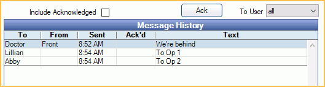

Messaging
Internal messaging can be used to send messages to any, or all workstations in an office.
In the Manage Module, at the bottom, is the Messaging area.

Messages can include text, sound and/or light. They can be To and From specific users, but everyone will see or hear it. For example, a message can be sent to all computers that says Doctor, Spouse, Line 1. Or a message could be sent that says Doctor, Op 1 with an accompanying message button that lights up.
Related Links:
 See our video: Messaging and Messaging Buttons.
See our video: Messaging and Messaging Buttons.- Use the Tasks Area for a more direct way of sending messages to specific staff members.
- Use eServices Texting for text messaging to patients.
Buttons
Messaging buttons display on the left. For more information, see Messaging Buttons.

Messaging Area
The messaging area determines the messages sent.

To, From, Extras, Message (& Send): These columns list the Message Elements. Several messaging elements come preset in Open Dental, but they can be customized or have new elements added.
To send a message:
- Click on a To, From, and/or Extra Item. Each element is optional.
- Click an item in Message (& Send) to immediately send it.
Custom Message: Enter a custom message, then click Send Message. Highlight a To, From, and/or Extra element prior to sending the message to include them. Messages have a character limit of 255.
Message History
All sent messages show in the Message History until they are acknowledged.
Include Acknowledged: Check to view messages that have been acknowledged. A field labeled Days will appear. Enter the number of days for which you want to see acknowledged messages. For example, enter 1 in the Days field to see acknowledged messages only for the last one day.
Ack: Highlight one or more messages, then click to acknowledge it. Every message should be acknowledged. If the message triggered a messaging button, you can also click on the lit button to acknowledge it. Acknowledged messages older than two days are deleted from the database once per week.
To User: Filter messages by user. By default, all users are shown in the list.